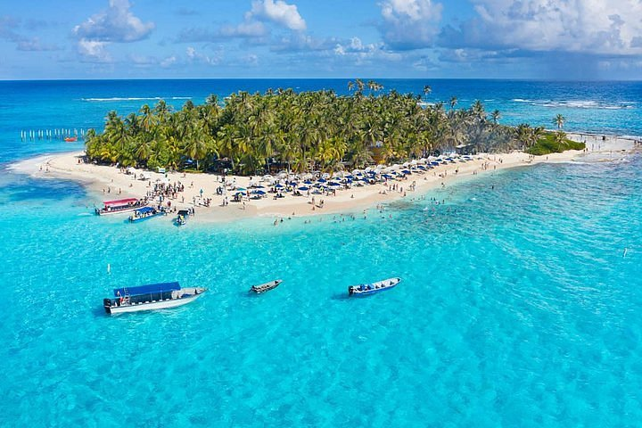
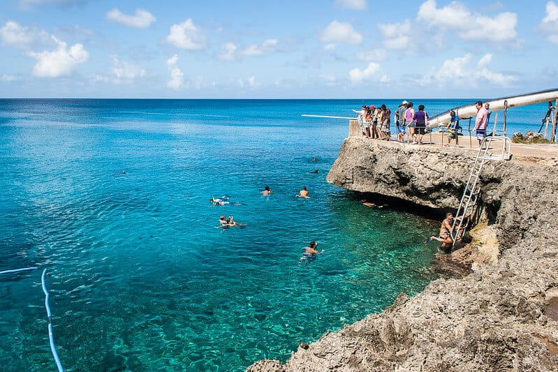

SAN ANDRES
San Andres is an island located in the Caribbean Sea and is part of the San Andres, Providencia and Santa Catalina archipelago.
It is one of the most well-known tourist destinations in Colombia thanks to its white sandy beaches, crystal-clear waters and impressive shades of blue and green.
In addition to its landscapes, the island has its own culture influenced by Caribbean, African, English and Colombian traditions.
Caribbean Sea
Caribbean
Tropical
Sea of Seven Colors
HISTORY AND CULTURE
An island with its own identity
San Andres has a history shaped by different cultures that have influenced its traditions, music, gastronomy and way of life.
Raizal culture is a fundamental part of the island's identity. Its inhabitants preserve traditions and cultural expressions unique to the Caribbean islands.
Music, dances, gastronomy and the Creole language are part of the cultural richness that makes San Andres unique.
The different shades of the sea surrounding the island
FEATURED PLACES

JOHNNY CAY
A small island surrounded by crystal-clear waters and white sandy beaches.

LA PISCINITA
A calm-water destination ideal for enjoying the sea and observing marine life.

WEST VIEW
A beautiful spot on the island known for its crystal-clear waters.

SAN LUIS
A coastal area where visitors can enjoy beaches and Caribbean landscapes.
EXPERIENCES
DIVING
Explore the Caribbean waters and discover the island's diverse marine life.
BEACHES
Relax on white sandy beaches surrounded by crystal-clear waters.
BOAT TOURS
Discover different places in the archipelago through tours across the sea.
WHY VISIT SAN ANDRES?
Sea
Enjoy crystal-clear waters with different shades of blue.
Beaches
Discover tropical landscapes and white sandy beaches.
Culture
Discover the traditions and cultural expressions of the Raizal community.
Nature
Explore the ecosystems and marine life of the Caribbean.